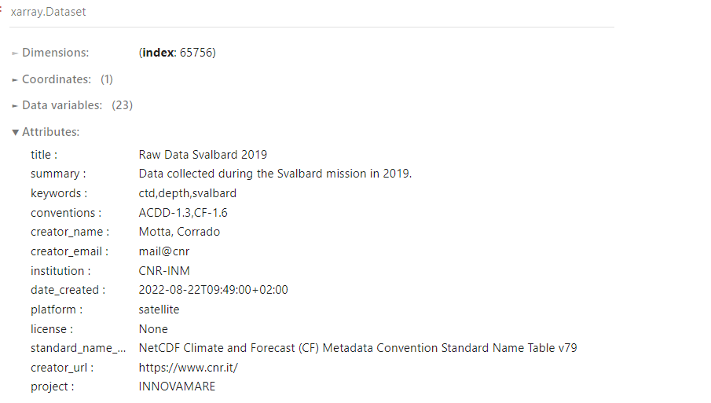

Global Metadata
Check the global metadata list now!
With global metadata we refer to descriptive metadata which usually includes info such as title, author, subjects, keywords, publisher, urls, etc. Several standards exists such as DataCite, DublinCore and ISO 19115. They are mainly domain agnostic.
Global Metadata is the term used to identify descriptive metadata in the NetCDF files. Our objective is to use NetCDF format for our robotic data. Therefore, we would like to add the appropriate global metadata directly within the NetCDF file, following the existing standard.
The ACDD convention (Attribute for Climate and Data Discovery) can be used to populate the global attributes. Such convention is adopted internationally and allows your NetCDF file to be self-describing, without the need of any additional file containing metadata information. When opened in python, using xarray, the dataset would look like the following:
As in any NetCDF file, the three main elements are present: Dimensions, Coordinates and Variables. Besides that, we can see a number of Attributes. Such attributes are not bound to any variable, that indicates they are global.
We agreed upon a set of minimum mandatory and optional global attributes to use in our datasets that can be found on our table.
Integration and metadata check
The notebook explains in details how to generate the NetCDF and add the global metadata.
At the time of writing, the global metadata are set on a configuration file named conf.ini. This file can be automatically generate from the interface that controls the vehicle. Then, the configuration file is taken in input from the notebook script, and the attributes where a value is found are added to the NetCDF, using xarray python package.
Furthermore, the generated global metadata are checked against the table shown above, to verify that all mandatory elements are included. To do so, a light JSON database is generated, which includes all mandatory and optional elements. The JSON database is very simple and looks as the following snippet:
"data": {
"657500993870255894": {
"name": "Title",
"ACDD": "title",
"required": true,
"default": "",
"description": "A brief title for the dataset",
"auto": false
},
"220784140157161391": {
"name": "Abstract",
"ACDD": "summary",
"required": true,
"default": "",
"description": "A short summary for dataset, the content and potential linkages etc.",
"auto": false
},
"338703899268240663": {
"name": "keywords",
"ACDD": "keywords",
"required": true,
"default": "unmanned marine vehicles,marine robotics,autonomous systems",
"description": "A comma separated list of key words and phrases",
"auto": false
}
At the moment, six fields are saved. The name, the ACDD standard name, if it is mandatorily required, the default value, if any, the description of the metadata, and if can be automatically generated from the dataset (e.g., Dataset northernmost latitude or Dataset start time). In this way, the validation is quickly done by using our own module:
# Opening JSON file
global_db = metadataDB.metadataDB('database/global_metadata.json')
# iterate over all the global metadata found in the database
for key, value in global_db.getAll().items():
# filter out the optional ones and the one we will automatically create
if(value['required']) and not value['auto']):
# key_list contains the metadata found in the configuration file with a valid value
if(value['ACDD'].lower() in key_list):
print(value['ACDD'] + ".. found")
# alert in case a mandatory metadata is not found.
else:
print(value['ACDD'], "NOT found!\n\nPlease add a value for ",value['ACDD'])
break